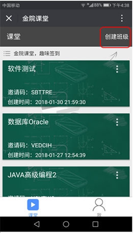
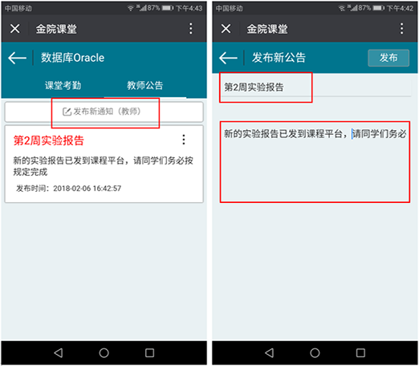

金院课堂——教师手册
感谢您使用金院课堂！！
金院课堂是旨在改善传统的课堂签到方式提高大学课堂出勤率，同时增加课堂师生的互动性。主要是教师端发起签到功能并提供限时有效的数字号码，学生端上传实时GPS定位信息并输入相应的数字号码进行课堂签到，系统及时地统计和显示出学生出勤情况反馈给教师端，达到现代课堂签到方式的智能性、快速性和有效性。
下面是金院课堂【教师端】部分功能简介！
我是老师 问题一：如何注册账号？ 无论您是老师或者学生，新用户都仅可以使用【邮箱】进行注册，您在填写相关的个人信息之后，即可注册成功。
问题二：如何创建班级？ 当您以老师的身份登录后，在课堂列表页右上角有“创建班级”，输入班级名称等以后，点击“保存”，即可完成创建，已创建的班级将会存在课堂列表里。
 问题三：如何邀请学生加入班级？ 学生需要通过“邀请码”加入班级。您可在列表页邀请课的左下角找到“六位字母”的邀请码，将该码复制发送给学生，学生即可通过此码加入该班级。
问题四：老师如何发布考勤？ 进入相应的班级之后，在【课堂考勤】板块最上方，点击【创建新考勤】，输入相应内容后，将系统显示的【4位数字考勤码】告诉学生，在一定时间后点击【结束】即可完成考勤。
问题五：老师如何查看考勤？ 进入相应的班级，在【课堂考勤】模块中点击你想要的查看的考勤，即可查看详细信息同时还可以导出该考勤到邮箱查看学生签到定位信息等。
问题六：老师如何发布公告？ 您可以在【教师公告】板块上方点击【发布新公告】，填写完相应内容，点击【发布】即可。
 问题七：个人信息等内容？ 如下图所示。